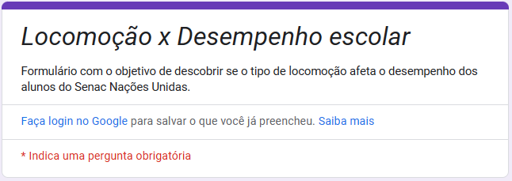
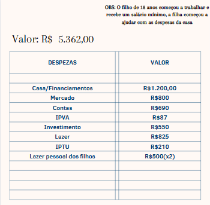
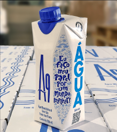

Em matemática, as atividades que eu mais gostei foram as seguintes:
1- Pesquisa Estatística

Umas das nossas útlimas atividades do ano, gostei muito de fazer essa atividade pois ela faz relação do mundo estaístico com o mundo real e então a gente descobre várias coisas.
2- Desafio: Organização e aprendizado sobre educação financeira

Essa atividade foi muito interessante. Tivemos que organizar a renda de uma família da melhor forma, fazendo investimentos e pagando dívidas, dando uma ideia de como vai ser na vida real.
3- Qual a melhor embalagem?

A primeira atividade mais trabalhosa que realizamos em matemática, a escolha da embalagem mais eficiente. Tudo isso partiu de como seria empilhado, viabilidade de produção e volume interno.